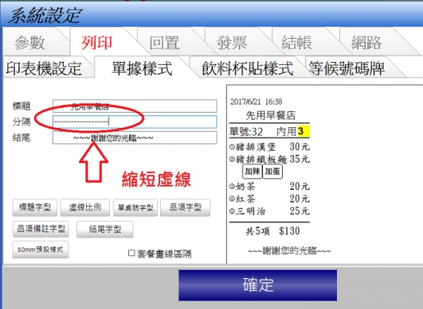
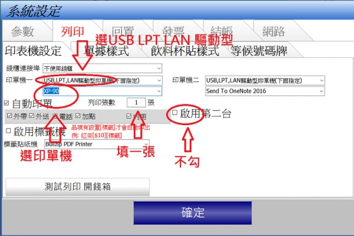

印表機列印問題
會停住, 有時會停住再印, 再來就印一半的錯誤訊號, 熱感紙重覆印一半,
印表工作無法完成。USB001/USB002 有試過換, win7,win8, win10都一樣,
另外, 我點印表機的測試頁來試, 都不會有這種問題,
請問要如何克服!!! 感謝您!!
1 個回答
您好
如果測試頁都正常 那可能是先用POS的設定問題
收到兩個工作 可能是勾了"啟用第二台" 或印了兩張


如果確定設定都沒問題 但還是一直無法解決 請下載安裝Teamviewer
https://www.teamviewer.com/zhtw/download/windows/
並請來信
advposys@gmail.com
1.告知teamviewer 連線帳號密碼
2.印單機廠牌型號
站長會連入您的電腦看看問題所在